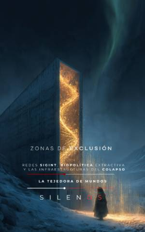

Illuminati
ZONAS DE EXCLUSIÓN : Redes SIGINT, biopolítica extractiva y las infraestructuras del colapso
Sinopsis
¿Qué sucede en los lugares donde el derecho ordinario se suspende y la ley deja de existir? Zonas de Exclusión y Geopolítica es una investigación profunda sobre las infraestructuras invisibles del poder soberano, donde la geografía se convierte en una herramienta de control absoluto. Descubre los mecanismos de la soberanía arcana Esta obra explora cómo el poder contemporáneo ha heredado la lógica de las antiguas sociedades secretas y los espacios de excepción para blindar su operatividad ante cualquier escrutinio civil. A través de un análisis interdisciplinar, el texto conecta la teología política, la tecnología de inteligencia y la biopolítica para revelar cómo operan los centros de decisión en los márgenes de la legalidad. Temas clave que encontrarás en este libro: Arquitecturas del Ocultamiento: De los temenos faraónicos a los búnkeres de alta tecnología, entenderás cómo el espacio físico se diseña para garantizar la opacidad. Redes SIGINT y Vigilancia: Un examen técnico sobre cómo la intercepción electromagnética y la gestión del espectro radioeléctrico consolidan la hegemonía del poder. Biopolítica Extractiva: Cómo el control del capital genético y la manipulación de flujos neuronales se han convertido en la última frontera de la exclusión soberana. Soberanía en el Post-Colapso: Análisis de los planes de continuidad civil y las jerarquías diseñadas para sobrevivir y reconstruir el mando tras un evento de magnitud terminal. Gobernanza Algorítmica: La transformación del rito tradicional en protocolos de encriptación y el uso del need-to-know extremo para fragmentar el conocimiento. ¿Para quién es este libro? Esta obra es indispensable para estudiantes de teoría política, investigadores de geopolítica crítica, analistas de seguridad y cualquier lector interesado en desentrañar las estructuras ocultas que operan tras la fachada de la modernidad. Si buscas comprender cómo se articula la dominación mediante la tecnología, el espacio y el secreto, este análisis te proporcionará una cartografía sin precedentes. Sumérgete en una exploración donde la geografía física y la metafísica del poder se entrelazan para blindar el futuro de nuestra civilización.